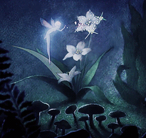
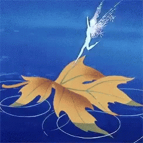
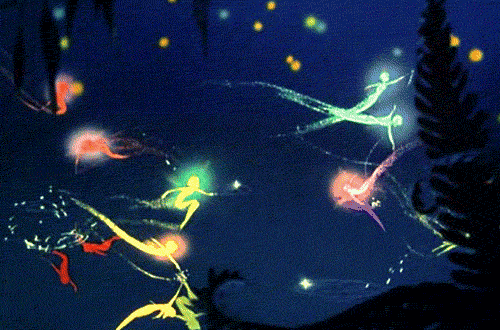

ORACLE CARDS
hello classmates of VISA2004, lets do some spiritual and faithful stuff. Oracle cards act as a sign, a sign to do something or not





MY DEEP SEEDED REASON FOR MY FAIRY OBSESSION
When I was picking my brains about this project, I found I wanted to encourage my nostalgic obsession of fairy’s (or faeries if you may). This love started when I was a child, and I began to spend lots of nights at my nan and pops house. Every night before bed, whether I was crying for my parents or nodding off peacefully, my nan would come in and tell me about the magic that is fairies. Brian Froud was our main detective on the case as he wrote about every fairy around. Fairies that plant the flowers for our walks or the fairies that make sure your toast falls buttered side down. Although these fairies gave me mad heebie jeebies, I cherish every moment I got to spend with her <3